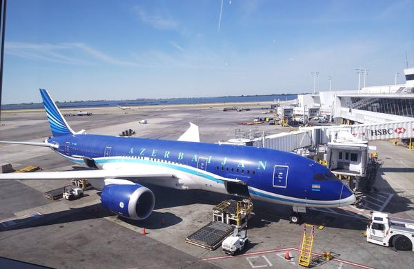
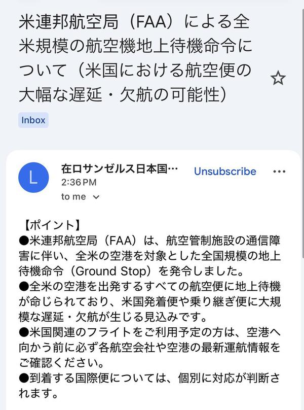
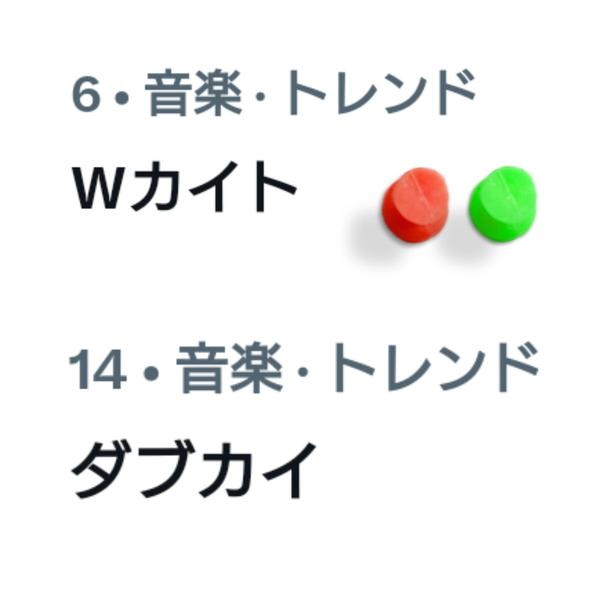
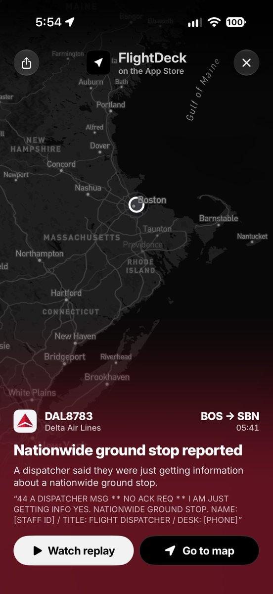
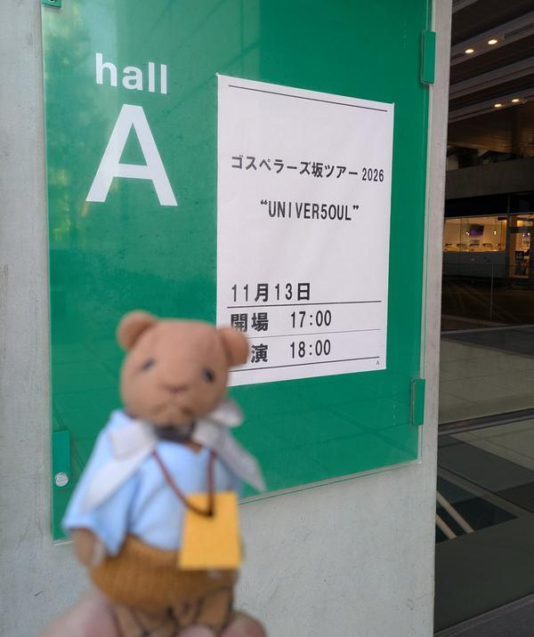
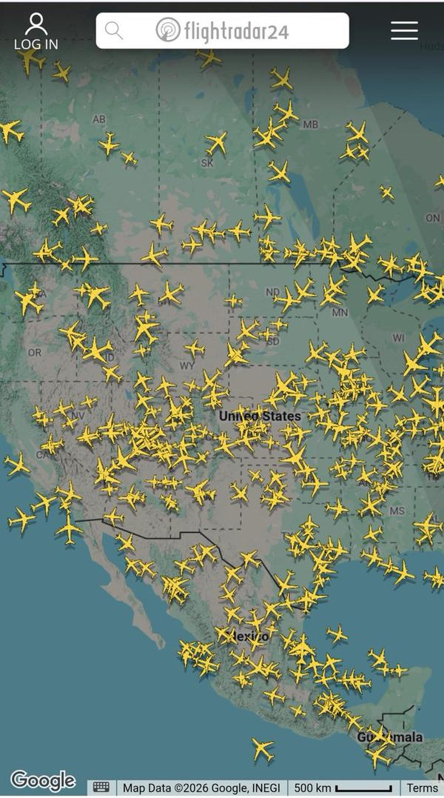

🇯🇵 日本の主要ニュース
🌍 世界の主要ニュース
🤖 AIニュース
💻 PC・ガジェットニュース
🔥 Xのトレンド（日本）
ジャンルで絞らず上位20件を掲載。「未確認」はX上の投稿だけを根拠にしたもので、報道機関による裏付けはありません。
日本テレビの土曜朝の情報番組「シューイチ」にTravis Japanが生出演し、新曲の生歌唱やメンバーのお天気コーナー出演などが話題に。8時40分ごろからは吉澤閑也さんのラーメン修業企画も放送予定です。
出典：番組公式X
Snow Man岩本照さんのNACK5のラジオ番組「岩本照のロウリュウしてもいいですか？」の放送中の実況です。きょうの埼玉県民の日や、岩本さんのご両親の結婚記念日の話題、ゴスペラーズの曲などで盛り上がっています。
出典：岩本照さん公式X
米FAAが管制センターの通信障害を理由に、全米の空港で出発便を止める地上待機命令を出しました。米国内でこうした全国規模の措置は異例で、日本でも速報が相次いでいます。
出典：NHK・The Verge ほか
土曜朝の情報番組「サタプラ」の実況。カプセルトイ特集や、紅白初出場が決まったAぇ! groupの正門良規さんの出演をめぐる投稿が多く集まっています。
⚠ 未確認（X情報のみ）

FAAが全米の空港を対象に出した地上待機（グランドストップ）命令のことです。ダフィー運輸長官がXで発表し、悪意ある攻撃の証拠はないとされています。
出典：NHK・朝日新聞 ほか

今回の全米での運航停止の原因は、各地の航空路管制センターに影響する通信障害とされています。在米日本領事館からも注意喚起が出たとの投稿があります。
出典：The Verge ほか
ドラマ「アンメット」の新作で、INIの尾崎匠海さんが演じる研修医・風間灯織が続投するとの発表があり、「おかえり」と喜ぶ投稿が相次いでいます。投稿によると放送は1月4日からとされています。
⚠ 未確認（X情報のみ）

シューイチに生出演したTravis Japanの宮近海斗さんと中村海人さん、2人の「カイト」のコンビの呼び名です。2人の掛け合いが話題になっています。
⚠ 未確認（X情報のみ）
櫻井翔さん主演の日本テレビ「占拠シリーズ」第4弾「XXXX占拠」が2027年1月の新春2時間スペシャルとして放送決定。舞台は後日発表とされ、「スキー場」「雪山ホテル」などの予想が飛び交っています。
出典：日本テレビ公式X
11月14日は埼玉県民の日です。県内の公立学校は休みとなり、施設の無料開放などのイベントも行われるため、お祝いや思い出を語る投稿が並んでいます。
⚠ 未確認（X情報のみ）
全米の空港での運航停止の原因とされる管制の通信障害に加え、前日からのMicrosoft 365の大規模障害もあり、「障害が続く」との声が上がっています。
出典：The Verge

FAAの地上待機命令で全米の空港の出発便が止まった件です。上空の便は着陸を認められ、国際線の到着は個別に対応しているとされます。
出典：NHK ほか
Travis Japanがシューイチに生出演し、関連する言葉がいくつもトレンド入り。番組のスタディーJAPANでは吉澤閑也さんのラーメン店修業の前編が放送されます。
出典：番組公式X
INIのドームツアー京セラドーム大阪公演で、グッズのカプセルトイ（ガチャ）を求める列が非常に長いという投稿が相次いでいます。「500人くらい並んでいる」との声もあります。
⚠ 未確認（X情報のみ）
11月14日は岩本照さんのご両親の結婚記念日として、ファンの間で知られています。ラジオ「ひかリュウ」でも触れられ、お祝いする投稿が並んでいます。
⚠ 未確認（X情報のみ）
NHKなどが伝えたFAAの説明で、全米の運航停止の原因が「通信の問題」とされたことから広がった言葉です。詳しい原因は調査中です。
出典：NHK
Travis Japanの宮近海斗さんと中村海人さんの「Wカイト」の別の呼び方です。シューイチ出演中に両方の呼び名がトレンド入りしました。
⚠ 未確認（X情報のみ）
米連邦航空局（FAA）が全米で航空機の運航を止めたニュースで、FAAの声明を伝える投稿が拡散しています。
出典：NHK ほか

ラジオ「ひかリュウ」でゴスペラーズの「ひとり」が流れ、ハーモニーに聴き入ったという投稿が集まっています。前夜は東京国際フォーラムでのツアー公演もありました。
⚠ 未確認（X情報のみ）

全米の空港での航空機の運航停止を受け、運航状況を示す地図の画面を共有する投稿などが続いています。復旧時期はまだ分かっていません。
出典：NHK ほか
Grok Bot がまとめました。